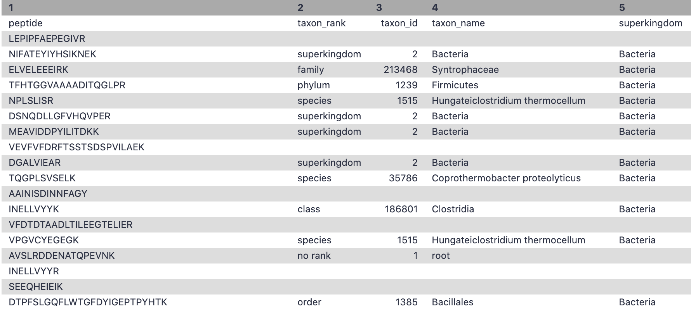

metaQuantome 1: Data creation
 Subina Mehta
Subina Mehta Timothy J. Griffin
Timothy J. Griffin Pratik Jagtap
Pratik Jagtap Emma Leith
Emma Leith Marie Crane
Marie CraneOverview
question Questionsobjectives Objectives
How do I perform functional and taxonomy analysis on metaproteomics data?
How can I perform quantitation on metaproteomics data?
How do I create inputs that can be used in metaquantome to examine differentially expressed proteins?
requirements Requirements
A taxonomy, functional and quantitational analysis of metaproteomic mass spectrometry data.
time Time estimation: 1 hour
level Level: Intermediate level level level
Supporting Materials
last_modification Last modification: Jan 6, 2021
Introduction
Metaproteomics “Metaproteomics video” involves characterization of community level expression of microbial proteins from an environmental or clinical sample. Metaproteomics data “Metaproteomics community effort” Jagtap et al. 2015 is primarily used to determine the functional status of the microbiome under study along with its taxonomic composition. The Galaxy-P Metaproteomics team published a software suite named metaQuantome { % cite Easterly2019 %} to enable quantitative and statistical analysis and visualization of functional, taxonomic expression as well as functional and taxonomy interaction. metaQuantome leverages peptide level quantitative information to analyze the taxonomic, functional expression within the microbial community in different conditions.

metaQuantome offers differential abundance analysis, principal components analysis, and clustered heat map visualizations, across multiple experimental conditions. metaQuantome, an open source tool, is available via command line and also accessible via Galaxy platform for reproducible analysis. As a first step for metaQuantome analysis, metaproteomics data needs to be made compatible for subsequent analysis. With this in mind, we have developed a metaQuantome data generation workflow tutorial that will help users generate inputs for metaQuantome analysis.

To demonstrate the use of the data creation workflow, we have used a thermophilic biogas reactor dataset wherein municipal food waste and manure is digested to generate methane gas. After one round in the reactor, the microbial community was simplified and enriched via serial dilution. This inoculum was then transferred to a solution of cellulose from Norwegian Spruce and incubated at 65°C. Triplicate samples were taken in a time series from 0 to 43 hours after inoculation and mass spectrometry data was acquired on a Q-Exactive (Thermo) mass spectrometer. For this training, we have chosen two time points-8 hour and 33 hour.

Agenda
In this tutorial, we will cover:
Pretreatments
The first step in a tutorial is to get the data from the zenodo link provided and making sure that it is in the correct format.
Get data
hands_on Hands-on: Data upload
Create a new history for this tutorial and give it a meaningful name
tip Tip: Creating a new history
Click the new-history icon at the top of the history panel
If the new-history is missing:
- Click on the galaxy-gear icon (History options) on the top of the history panel
- Select the option Create New from the menu
tip Tip: Renaming a history
- Click on Unnamed history (or the current name of the history) (Click to rename history) at the top of your history panel
- Type the new name
- Press Enter
Import the files: 6 MZML files, a Protein FASTA file, and an Experimental Design file from Zenodo or from the shared data library (
GTN - Material->proteomics->metaQuantome 1: Data creation)https://zenodo.org/record/4037137/files/ExperimentalDesign.tsv https://zenodo.org/record/4037137/files/ProteinDB_cRAP.fasta https://zenodo.org/record/4037137/files/T2_A1.mzml https://zenodo.org/record/4037137/files/T2_B1.mzml https://zenodo.org/record/4037137/files/T7A_1.mzml https://zenodo.org/record/4037137/files/T7B_1.mzmltip Tip: Importing data via links
- Copy the link location
Open the Galaxy Upload Manager (galaxy-upload on the top-right of the tool panel)
- Select Paste/Fetch Data
Paste the link into the text field
Press Start
- Close the window
By default, Galaxy uses the URL as the name, so rename the files with a more useful name.
tip Tip: Importing data from a data library
As an alternative to uploading the data from a URL or your computer, the files may also have been made available from a shared data library:
Go into Shared data (top panel) then Data libraries
Find the correct folder (ask your instructor)
- Select the desired files
- Click on the To History button near the top and select as Datasets from the dropdown menu
- In the pop-up window, select the history you want to import the files to (or create a new one)
- Click on Import
- Rename the datasets (If needed)
Check that the datatype ( Make sure they are in the correct formats). 6 MZML files (format=
mzml, a Protein FASTA file (format=fasta), and an Experimental Design file (format=tabular)tip Tip: Changing the datatype
- Click on the galaxy-pencil pencil icon for the dataset to edit its attributes
- In the central panel, click on the galaxy-chart-select-data Datatypes tab on the top
- Select
datatypes- Click the Change datatype button
- Add to each database a tag corresponding to the name of the input data (optional).
- Build a Dataset list for the four mzml files.
- Click the Operations on multiple datasets check box at the top of the history panel
tip Tip: Creating a dataset collection
- Click on Operations on multiple datasets (check box icon) at the top of the history panel
- Check all the datasets in your history you would like to include
Click For all selected.. and choose Build dataset list
- Enter a name for your collection
- Click Create List to build your collection
- Click on the checkmark icon at the top of your history again
- Rename the dataset collection as
MZML dataset collection.


Match peptide sequences
For this, the sequence database-searching program called SearchGUI will be used. The created dataset collection of the four MZML files in the history has to be first converted to MGF to be used as the MS/MS input.
Convert mzml to MGF with msconvert
msconvert is used in order to convert the input file type, a mzml data collection, to a mgf file type. The mgf file type can then be used as the Input Peak Lists when running SearchGUI.
hands_on Hands-on: mzml to MGF
- msconvert Tool: toolshed.g2.bx.psu.edu/repos/galaxyp/msconvert/msconvert/3.0.19052.0 with the following parameters:
- param-collection “Input unrefined MS data”:
MZML dataset collection- “Do you agree to the vendor licenses?”:
Yes- “Output Type”:
mgf- In “Data Processing Filters”:
- “Apply peak picking?”:
Yes- “Apply m/z refinement with identification data?”:
No- “(Re-)calculate charge states?”:
No- “Filter m/z Window”:
No- “Filter out ETD precursor peaks?”:
No- “De-noise MS2 with moving window filter”:
No- In “Scan Inclusion/Exclusion Filters”:
- “Filter MS Levels”:
No- In “General Options”:
- “Sum adjacent scans”:
No- “Output multiple runs per file”:
Nocomment Comment
This is a critical step for running this workflow.
question Questions
- Why do we need to convert the files to MGF?
- Can we use any other input format?
solution Solution
- The files have to be converted to MGF for this workflow because we use SearchGUI as the searching tool and it can only read MGF files.
- Yes, we can also use RAW files as input and just convert RAW files to MGF.
Search GUI
SearchGUI is a tool that searches sequence databases on any number of MGF files. In this case, the previously made collection of three MGF files (entitles MGF files) will be used as the MS/MS input. This tool will produce an output file, called a SearchGUI archive file. This file will serve as in input for the next tool used, PeptideShaker.
hands_on Hands-on: Search sequence databases
- Search GUI Tool: toolshed.g2.bx.psu.edu/repos/galaxyp/peptideshaker/search_gui/3.3.10.1 with the following parameters:
- param-file “Protein Database”:
ProteinDB_cRAP.fasta- param-file “Input Peak Lists (mgf)”:
output(output of msconvert tool)- In “Search Engine Options”:
- “DB-Search Engines”:
X!tandem- In “Protein Digestion Options”:
- “Digestion”:
Trypsin- “Maximum Missed Cleavages”:
2- In “Precursor Options”:
- “Fragment Tolerance”:
0.2- “Maximum Charge”:
6- In “Protein Modification Options”:
- “Fixed Modifications”:
Carbamidomethylation of C- “Variable Modifications”:
Oxidation of M, Acetylation of Protein N-term- In “Andvanced Options”:
- “SearchGUI Options”:
Default- “X!Tandem Options”:
Advanced
- “X!Tandem: Quick Acetyl”:
No- “X!Tandem: Quick Pyrolidone”:
No- “X!Tandem: Maximum Valid Expectation Value”:
100.0- “X!Tandem peptide model refinement”:
Don't refine- “OMSSA Options”:
Default- “MSGF Options”:
Default- “MS Amanda Options”:
Default- “TIDE Options”:
Default- “MyriMatch Options”:
Default- “Comet Options”:
Default- “DirectTag Options”:
Default- “Novor Options”:
Defaultcomment Comment
Note that sequence databases used for metaproteomics are usually much larger than the excerpt used in this tutorial. When using large databases, the peptide identification step can take much more time for computation. In metaproteomics, choosing the optimal database is a crucial step of your workflow, for further reading see Timmins-Schiffman et al (2017). To learn more about database construction in general, like integrating contaminant databases or using a decoy strategy for FDR searching, please consult our tutorial on Database Handling.
question Questions
- How many Search Engines can be used?
- Can the parameters be manipulated?
solution Solution
- There are 8 database search algorithms, you can use as many as you want. Ideally, 4 database algorithms gives the best results.
- Yes, The parameters can be manipulated according to the experimental design of the datasets.
Peptide Shaker
PeptideShaker is a post-processing software tool that processes data from the SearchGUI software tool. PeptideShaker is a search engine for interpretation of proteomics identification results from multiple search engines, currently supporting X!Tandem, MS-GF+, MS Amanda, OMSSA, MyriMatch, Comet, Tide, Mascot, Andromeda and mzIdentML. More specifically, PeptideShaker processes data from the SearchGUI tool through the organization of Peptide-Spectral Matches (PSMs) generated. In addition to organization, it provides an assessment of confidence of the data and generates outputs that can be visualized by users to interpret the results.
hands_on Hands-on: Interpretation of SearchGUI
- Peptide Shaker Tool: toolshed.g2.bx.psu.edu/repos/galaxyp/peptideshaker/peptide_shaker/1.16.36.3 with the following parameters:
- param-file “Compressed SearchGUI results”:
searchgui_results(output of Search GUI tool)- “Specify Advanced PeptideShaker Processing Options”:
Advanced Processing Options
- “The PTM probabilistic score to use for PTM localization”:
A-score- “Specify Advanced Filtering Options”:
Advanced Filtering Options
- “Maximum Peptide Length”:
60- “Specify Contact Information for mzIdendML”:
GalaxyP Project contact (Not suitable for PRIDE submission)- In “Exporting options”:
- “Creates a mzIdentML file”:
Yes- “Compress results into a single zip file”:
No- “Reports to be generated”:
PSM Report, Peptide Report, Protein Report, Certificate of Analysis,comment Comment
There are a number of choices for different data files that can be generated using PeptideShaker. A compressed file can be made containing all information needed to view the results in the standalone PeptideShaker viewer. A
mzidentMLfile can be created that contains all peptide sequence matching information and can be utilized by compatible downstream software. Other outputs are focused on the inferred proteins identified from the PSMs, as well as phosphorylation reports, relevant if a phosphoproteomics experiment has been undertaken. More detailed information on peptide inference using SearchGUI and PeptideShaker can be found in our tutorial on Peptide and Protein ID.
Removing Contaminants
hands_on Hands-on: Remove contaminants from PSM report
This Select tool is used to remove all the contaminants from the Peptide Spectral Match (PSM) search results.
- Select Tool: Grep1 with the following parameters:
- param-file “Select lines from”:
output_psm(PSM report output of Peptide Shaker tool)- “that”:
NOT Matching- “the pattern”:
con_- Rename PSM_Report_no_contaminants
hands_on Hands-on: Removing contaminants from Peptide report
- Select Tool: Grep1 with the following parameters:
- param-file “Select lines from”:
output_peptides(Peptide Report output of Peptide Shaker tool)- “that”:
NOT Matching- “the pattern”:
con_- Rename Peptide_Report_no_contaminants
comment Comment
In Proteomics, contamination is generally detected as peaks in spectra that did not originate from the samples and can be introduced in the sample from a variety of environmental sources or human error. Identification of these contaminants is critical to enable their removal before data analysis, mainly, to maintain the validity of conclusions drawn from statistical analyses. Thus, this selection tool helps us remove the contaminants that were identified in the spectral data.
question Questions
- Why is removing contaminants important?
solution Solution
- Ideally, we would like to remove known contaminants from our samples just to maintain discovering novel proteoforms in our sample.
Removing file extensions for Quantification
This is a data manipulation step to make the data compatible with other downstream processing tools. The Replace text tool replaces the .mgf extension from the PSM report so that it can be used as an input for FlashLFQ.
hands_on Hands-on: Removing file extensions
- Replace Text in a specific column Tool: toolshed.g2.bx.psu.edu/repos/bgruening/text_processing/tp_replace_in_column/1.1.3 with the following parameters:
- param-file “File to process”:
PSM_Report_no_contaminants(output of Select tool)- In “Replacement”:
- param-repeat “Insert Replacement”
- “in column”:
Column: 10- “Find pattern”:
.mzml.mgfRename Input_for_FlashLFQ.
comment Comment
Replace Text searches given columns and finds and replaces patterns provided by the user. This tool is removing the extensions (.raw,.mzml,.mgf) in the spectral file column provided by the PeptideShaker tool. This step is critical for FlashLFQ to work.
Extracting Peptide list
hands_on Hands-on: Selecting peptide list
This step selects the peptide column from the Select output ( where we have removed the contaminants)
- Cut Tool: Cut1 with the following parameters:
- “Cut columns”:
c6- param-file “From”:
Peptide_Report_no_contaminants(output of Select tool)- Rename file as peptide_list.
Peptide Quantification
In this tutorial, we are using FlashLFQ as the quantitation tool. The user can choose to work with other quantitation tools, e.g. moFF and MaxQuant are available in Galaxy.
FlashLFQ
FlashLFQ can quantify MS peaks in order to find the abundances of peptides. FlashLFQ is a fast label-free quantification algorithm. Additionally, the abundances of peptides within the sample can be compared between samples as further analysis beyond this workflow.
hands_on Hands-on: Quantification
- FlashLFQ Tool: toolshed.g2.bx.psu.edu/repos/galaxyp/flashlfq/flashlfq/1.0.3.0 with the following parameters:
- param-file “identification file”:
Input_for_FlashLFQ(output of Replace Text tool)- param-collection “spectrum files”:
MZML dataset collection- “match between runs”:
Yes- “Use experimental design for normalization or protein fold-change analysis”:
Yes
- param-file “ExperimentalDesign.tsv”:
ExperimentalDesign.tsv- “Perform Bayesian protein fold-change analysis”:
Yes
- “control condition for Bayesian protein fold-change analysis”:
S1comment Comment
FlashLFQ is a label-free quantification tool for mass-spectrometry proteomics. It supports both .mzML and Thermo .raw file formats. To run FlashLFQ on Galaxy, there are three main input files:
- PSM report from Peptide Shaker (
Input_for_FlashLFQ)- MZML/ RAW spectrum files (
MZML dataset collection)- Experimental Design File (
ExperimentalDesign.tsv) The Experimental Design file should be a tabular file with a “File”, “Condition”, “Sample”, “Fraction”, and “Replicate” column. The “File” column should match your mzml spectrum file name.
question Questions
Can FlashLFQ be used with fractionated data?
Does FlashLFQ perform peptide and protein level quantification?
solution Solution
Yes, FlashLFQ can be used with fractionated datasets and multiple conditions
FlashLFQ performed both peptide level and protein level quantification. For protein level, FlashLFQ used Bayesian Fold change analysis.
Filtering peptides that are less than 50 amino acids
hands_on Hands-on: Extracting peptides<50 amino acids
This is a data manipulation tool. Here, we select those peptides with less than 50 amino acids in length.
- Filter data on any column using simple expressions Tool: Filter1 with the following parameters:
- param-file “Filter”:
peptide_list(output of Cut tool)- “With following condition”:
len(c1)<=50- “Number of header lines to skip”:
1Rename as Unipept_peptide_list.
comment Comment
Unipept fails with peptides more than 50 amino acids in length, thus we decided to work with peptides that are less than 50 amino acids.
Manipulating text for metaQuantome
hands_on Hands-on: Text manipulation for metaQuantome intensity file
Regex Find And Replace goes line by line through the input file and will remove any patterns specified by the user and replace them with expressions also specified by the user. In this case, Regex Find And Replace is being used on a FlashLFQ output file and manipulating the header to make it compatible with metaQuantome along with completely removing the N-terminus and C-terminus tag in the peptide sequences.
- Regex Find And Replace Tool: toolshed.g2.bx.psu.edu/repos/galaxyp/regex_find_replace/regex1/1.0.0 with the following parameters:
- param-file “Select lines from”:
QuantifiedPeptides(output of FlashLFQ tool)- In “Check”:
- param-repeat “Insert Check”
- “Find Regex”:
Base Sequence- “Replacement”:
peptide- param-repeat “Insert Check”
- “Find Regex”:
Intensity_- param-repeat “Insert Check”
- ”Find Regex”:
NH2-- ”Replacement”:
leave it blank- param-repeat “Insert Check”
- ”Find Regex”:
-COOH- ”Replacement”:
leave it blank- Rename the file as
Intensity
Functional and Taxonomy annotation
Unipept for taxonomy annotation
Unipept Mesuere et al. 2018 is used again to match tryptic peptides and find the taxonomy and lowest common ancestor of each peptide.
hands_on Hands-on: Taxonomy annotation
- Unipept Tool: toolshed.g2.bx.psu.edu/repos/galaxyp/unipept/unipept/4.0.0 with the following parameters:
- “Unipept application”:
pept2lca: lowest common ancestor
- “Equate isoleucine and leucine”:
Yes- “allfields”:
Yes- “Peptides input format”:
tabular
- param-file “Tabular Input Containing Peptide column”:
Unipept_peptide_list(output of Filter tool)- “Select column with peptides”:
c1- “Choose outputs”:
Select allcomment Comment
There are two Unipept in this workflow, One for taxonomy and other for function.

question Questions
- Can any other taxonomy and functional tool be used apart from Unipept?
solution Solution
- Yes, any tool can be used for taxonomy and functional output. Please make sure the output has the information that includes peptide,taxon_name, taxon_id, genus, species etc.
The JSON output from the Taxonomy can be visualized using the visualize option and Select the Unipept Taxonomyviewer.


Unipept for Functional annotation
Unipept is used to match tryptic peptides and find the taxonomy and Functional annotation of the peptides. Unipept is used to match sample tryptic peptides to proteins using a fast-matching algorithm. Although Unipept can be accessed and used through the web page, the use of Unipept on Galaxy allows the production of output datasets including the peptide information to be used in sequential steps. Unipept requires a list containing the peptide sequences which was generated by Query Tabular.
hands_on Hands-on: Functional annotation
- Unipept Tool: toolshed.g2.bx.psu.edu/repos/galaxyp/unipept/unipept/4.3.0 with the following parameters:
- “Unipept application”:
peptinfo: Tryptic peptides and associated EC and GO terms and lowest common ancestor taxonomy
- “Equate isoleucine and leucine”:
Yes- “retrieve extra information”:
Yes- “group responses by GO namespace (biological process, molecular function, cellular component)”:
Yes- “allfields”:
Yes- “Peptides input format”:
tabular
- param-file “Tabular Input Containing Peptide column”:
Unipept_peptide_list(output of Filter tool)- “Select column with peptides”:
c1- “Choose outputs”:
Select allcomment Comment
There are two Unipept in this workflow, One for taxonomy and other for function. Please select all the output options from Unipept.
The JSON output from the Taxonomy can be visualized using the visualize option and Select the Unipept Taxonomyviewer.
Extracting EC values
hands_on Hands-on: Extract EC numbers
The cut tool cuts out specific columns from the dataset. In this case, the cut tool is being used to extract columns 1 (peptide) and 3 (EC number) from the dataset peptinfo EC.tsv output. This is a manipulation tool for metaQuantome’s convenience.
- Cut Tool: Cut1 with the following parameters:
- “Cut columns”:
c1,c3- param-file “From”:
output_ec_tsv(output of Unipept tool)- Rename EC_table.
Filtering confident peptides
Query Tabular is a tool that can load tabular data into a SQLite database. This step precedes UniPept, as a list containing the peptide sequences must be generated. In this step a list of gene ontology (GO) terms is being generated.
hands_on Hands-on: Filtering confident peptides
- Query Tabular Tool: toolshed.g2.bx.psu.edu/repos/iuc/query_tabular/query_tabular/3.0.0 with the following parameters:
- In “Database Table”:
- param-repeat “Insert Database Table”
- param-file “Tabular Dataset for Table”:
output_go_tsv(output of Unipept tool)- In “Table Options”:
- “Specify Name for Table”:
Goterm- “Specify Column Names (comma-separated list)”:
peptide,total_protein_count,go_term,protein_count,go_name,go_funct- “SQL Query to generate tabular output”:
SELECT Goterm.* FROM Goterm WHERE ((1.0*Goterm.protein_count)/(1.0*Goterm.total_protein_count)) >= 0.05- “include query result column headers”:
YesRename as Unipept_Function.
comment Comment
In the Unipept API output, the threshold is set to 0.5% of the overall number of peptides unambiguously assigned to a taxon at a particular taxonomic rank level. Here in the Galaxy platform, we are using Query tabular to perform this filtering.
Removing Hashtag from output
This step is to remove the hashtag from the Peptide header in the Unipept output.
hands_on Hands-on: Remove # from peptide header
- Replace Text Tool: toolshed.g2.bx.psu.edu/repos/bgruening/text_processing/tp_replace_in_line/1.1.2 with the following parameters:
- param-file “File to process”:
Unipept_Function(output of Unipept tool)- In “Replacement”:
- param-repeat “Insert Replacement”
- “Find pattern”:
#peptide- “Replace with:”:
peptide- Rename file as All_functions
Filter - EC values
We are using this Query tabular to rename the output that we obtained from the Cut column tool.
hands_on Hands-on: Extracting EC for metaQuantome
- Query Tabular Tool: toolshed.g2.bx.psu.edu/repos/iuc/query_tabular/query_tabular/3.0.0 with the following parameters:
- In “Database Table”:
- param-repeat “Insert Database Table”
- param-file “Tabular Dataset for Table”:
EC_table(output of Cut tool)- In “Table Options”:
- “Specify Name for Table”:
ec- “Specify Column Names (comma-separated list)”:
peptide,go_ec- “SQL Query to generate tabular output”:
SELECT * FROM ec- “include query result column headers”:
Yes- Rename file as go_ec
Filter - Biological Functions
The filter tool allows restriction of the dataset using simple conditional statements. This step is used to filter out the GO terms with biological processes and the corresponding number of peptides associated with these terms.
hands_on Hands-on: Extracting biological processes for metaQuantome
- Filter Tool: Filter1 with the following parameters:
- param-file “Filter”:
Unipept_Function(output of Query Tabular tool)- “With following condition”:
c5=='biological process'- “Number of header lines to skip”:
1- Rename file as
go_bp

Filter - Cellular components
This step is used to filter out the GO terms with cellular components and the corresponding number of peptides associated with these terms.
hands_on Hands-on: Extracting cellular component for metaQuantome
- Filter Tool: Filter1 with the following parameters:
- param-file “Filter”:
Unipept_Function(output of Query Tabular tool)- “With following condition”:
c5=='cellular component'- “Number of header lines to skip”:
1- Rename file as
go_cc
Filter - Molecular Function
This step is used to filter out the GO terms with molecular function and the corresponding number of peptides associated with these terms.
hands_on Hands-on: Extracting molecular function for metaQuantome
- Filter Tool: Filter1 with the following parameters:
- param-file “Filter”:
Unipept_Function(output of Query Tabular tool)- “With following condition”:
c5=='molecular function'- “Number of header lines to skip”:
1- Rename file as
go_mf

Conclusion
This completes the walkthrough of the metaQuantome data creation workflow. This tutorial is a guide to have datasets that are metaQuantome ready/compatible and can be used for metaproteomics research. We have incorporated only two conditions in this workflow but users can use as many as they want. Researchers can use this workflow with their data also, please note that the tool parameters and the workflow will be needed to be modified accordingly.
This workflow was developed by the Galaxy-P team at the University of Minnesota. For more information about Galaxy-P or our ongoing work, please visit us at galaxyp.org
keypoints Key points
Use dataset collections
With SearchGUI and PeptideShaker you can gain access to multiple search engines
Learning the basics of SQL queries can pay off
Useful literature
Further information, including links to documentation and original publications, regarding the tools, analysis techniques and the interpretation of results described in this tutorial can be found here.
References
- Metaproteomics community effort. https://z.umn.edu/gcc2017mporal
- Metaproteomics, G.-P. Galaxy-P Metaproteomics instance. https://proteomics.usegalaxy.eu/
- Metaproteomics video. http://z.umn.edu/mpvideo2018
- Jagtap, P. D., A. Blakely, K. Murray, S. Stewart, J. Kooren et al., 2015 Metaproteomic analysis using the Galaxy framework. PROTEOMICS 15: 3553–3565. 10.1002/pmic.201500074
- Mesuere, B., F. V. der Jeugt, T. Willems, T. Naessens, B. Devreese et al., 2018 High-throughput metaproteomics data analysis with Unipept: A tutorial. Journal of Proteomics 171: 11–22. 10.1016/j.jprot.2017.05.022
Feedback
Did you use this material as an instructor? Feel free to give us feedback on how it went.

Citing this Tutorial
- Subina Mehta, Timothy J. Griffin, Pratik Jagtap, Emma Leith, Marie Crane, 2021 metaQuantome 1: Data creation (Galaxy Training Materials). /training-material/topics/proteomics/tutorials/metaquantome-data-creation/tutorial.html Online; accessed TODAY
- Batut et al., 2018 Community-Driven Data Analysis Training for Biology Cell Systems 10.1016/j.cels.2018.05.012
details BibTeX
@misc{proteomics-metaquantome-data-creation, author = "Subina Mehta and Timothy J. Griffin and Pratik Jagtap and Emma Leith and Marie Crane", title = "metaQuantome 1: Data creation (Galaxy Training Materials)", year = "2021", month = "01", day = "06" url = "\url{/training-material/topics/proteomics/tutorials/metaquantome-data-creation/tutorial.html}", note = "[Online; accessed TODAY]" } @article{Batut_2018, doi = {10.1016/j.cels.2018.05.012}, url = {https://doi.org/10.1016%2Fj.cels.2018.05.012}, year = 2018, month = {jun}, publisher = {Elsevier {BV}}, volume = {6}, number = {6}, pages = {752--758.e1}, author = {B{\'{e}}r{\'{e}}nice Batut and Saskia Hiltemann and Andrea Bagnacani and Dannon Baker and Vivek Bhardwaj and Clemens Blank and Anthony Bretaudeau and Loraine Brillet-Gu{\'{e}}guen and Martin {\v{C}}ech and John Chilton and Dave Clements and Olivia Doppelt-Azeroual and Anika Erxleben and Mallory Ann Freeberg and Simon Gladman and Youri Hoogstrate and Hans-Rudolf Hotz and Torsten Houwaart and Pratik Jagtap and Delphine Larivi{\`{e}}re and Gildas Le Corguill{\'{e}} and Thomas Manke and Fabien Mareuil and Fidel Ram{\'{\i}}rez and Devon Ryan and Florian Christoph Sigloch and Nicola Soranzo and Joachim Wolff and Pavankumar Videm and Markus Wolfien and Aisanjiang Wubuli and Dilmurat Yusuf and James Taylor and Rolf Backofen and Anton Nekrutenko and Björn Grüning}, title = {Community-Driven Data Analysis Training for Biology}, journal = {Cell Systems} }
congratulations Congratulations on successfully completing this tutorial!
curriculum Do you want to extend your knowledge? Follow one of our recommended follow-up trainings:
- Proteomics
- Metaproteomics tutorial: tutorial hands-on